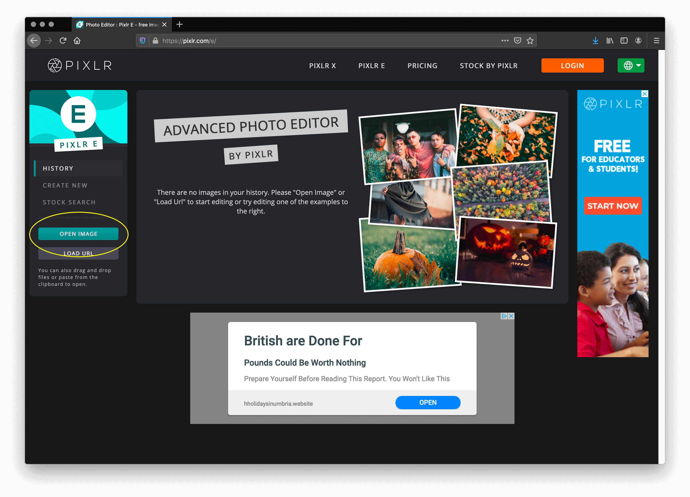
Fig 1Got to Pixlr.com, you don't need to Login/Sign UP. Select the Open Image button.
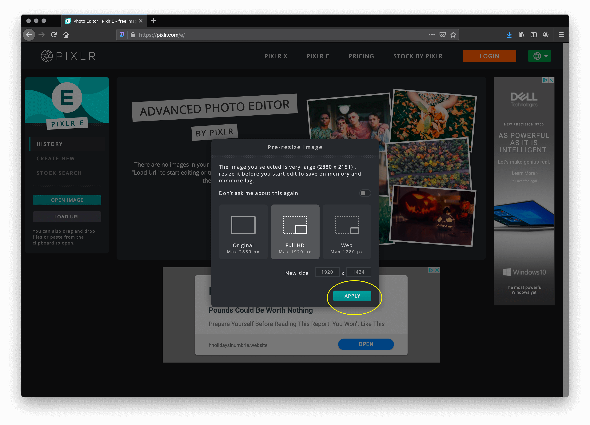
Fig 2Select the file band.jpg in the originals folder. As the image is very big, you will get the Pre-resize Image menu. Go with the default, Full HD. Select Apply
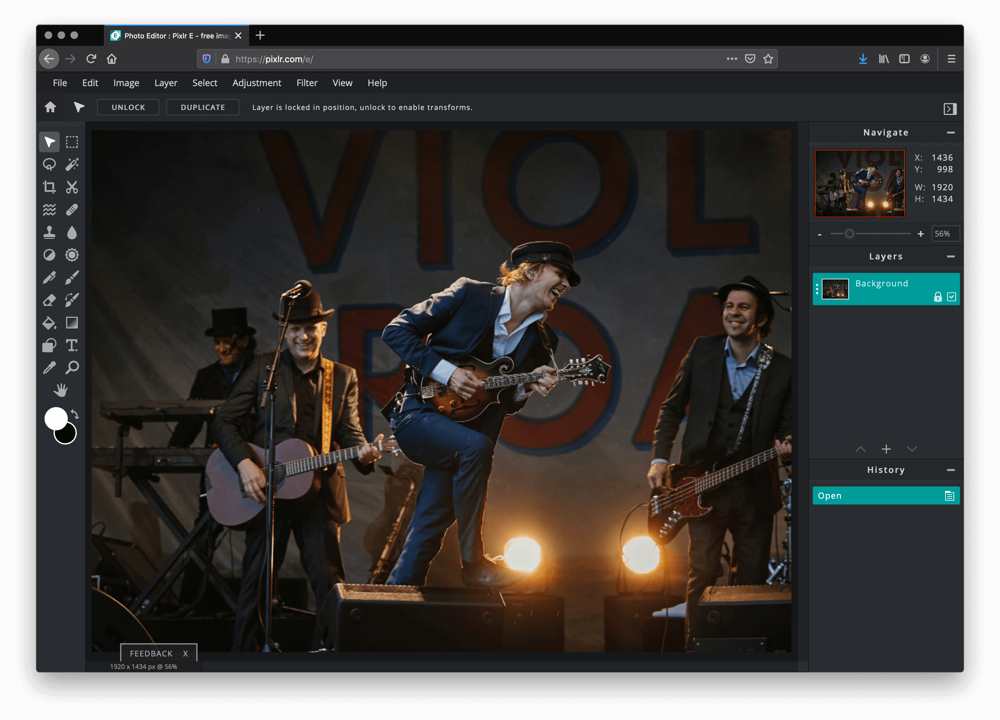
Fig 3The image loads into the editor. Note that you are now editing an uploaded copy of your image - the original stays intact. That's important - never edit the original - always keep it as a back-up.
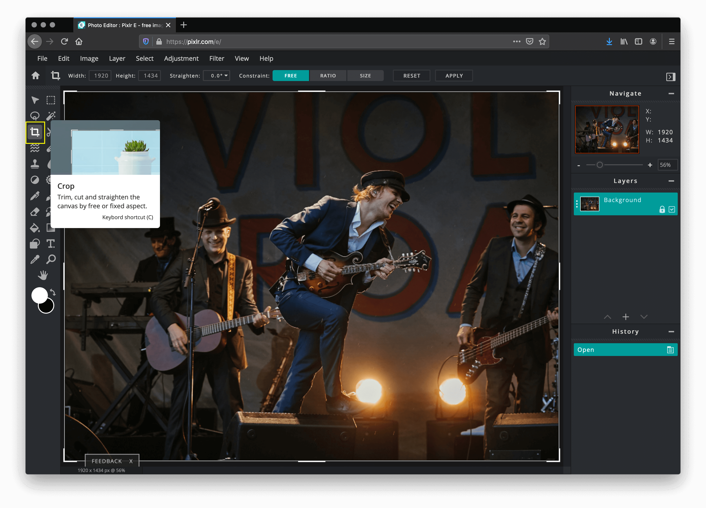
Fig 4Our next action is to crop the image. You do not need to crop every image, but since images add weight to our page (slowing download - even if minor) it is always worth considering. Cropping into the focus of an image helps emphasise the message or story you are trying to deliver.
Select the 'Crop Tool' in the menu. You will notice the image is now selected with a white selector border.
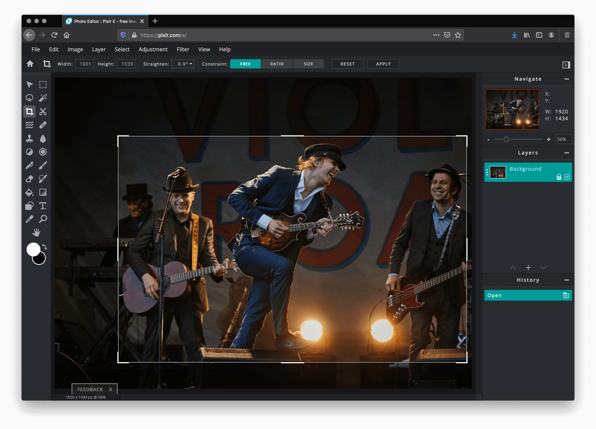
Fig 5Drag the selector to create a rectangle as illustrated with the focus tighter on the lead singer.
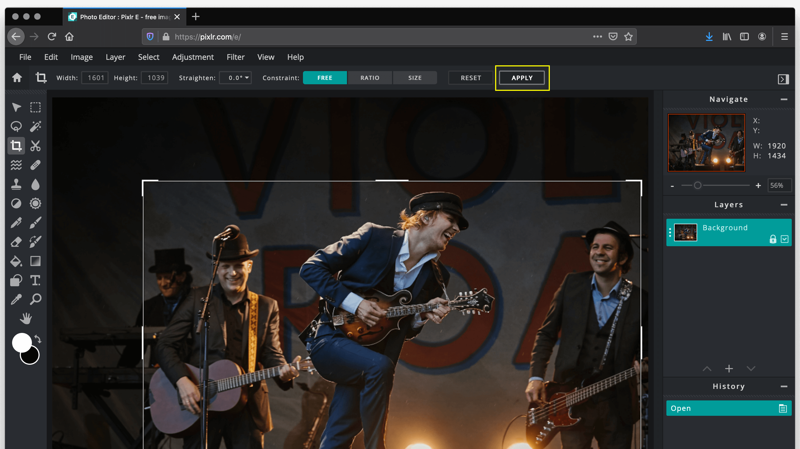
Fig 6You can then make minor adjustments before executing the crop.
Note that there are a number of options available with the crop tool including selecting particular dimensions or ratios.
If happy Select Apply from the menu.
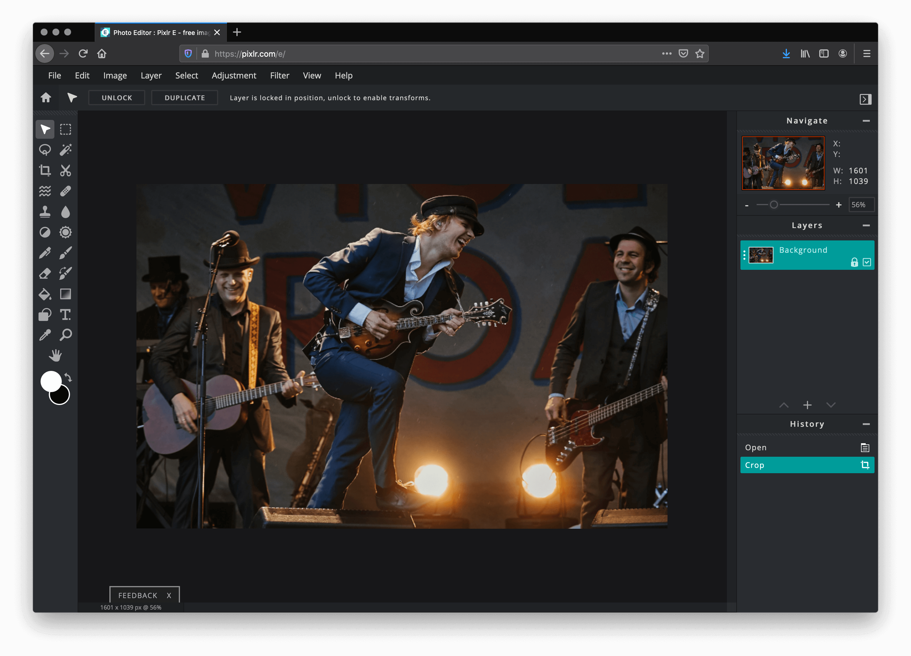
Fig 7Your cropped image is then displayed. If unhappy, Un-do and try again.
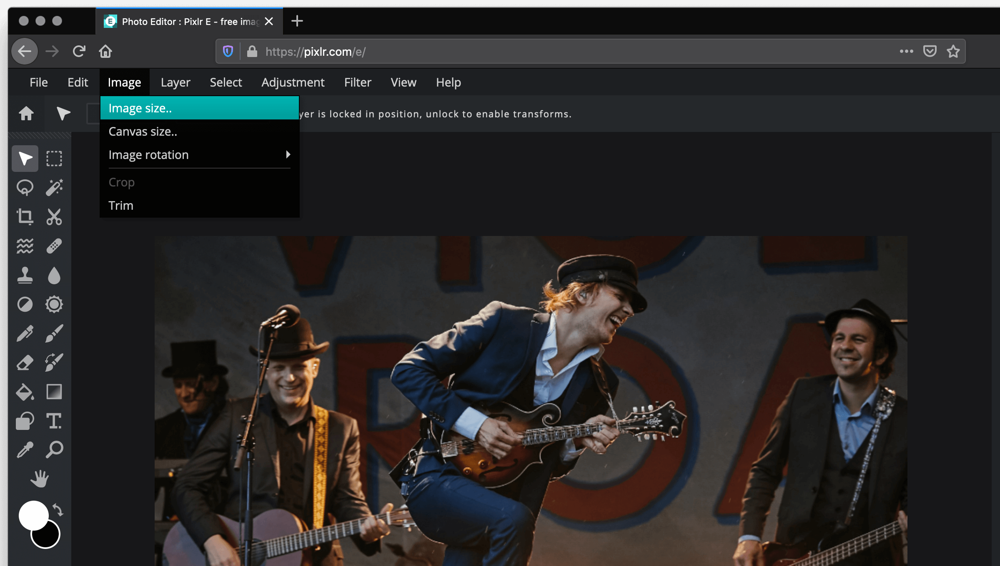
Fig 8We are now going to save, re-size and optimise the image. Of course the image may now be the perfect size for our design but for the sake of our page (and swift download speeds) we will be asking your to reduce the image size further.Select Image > Image size from the menu.
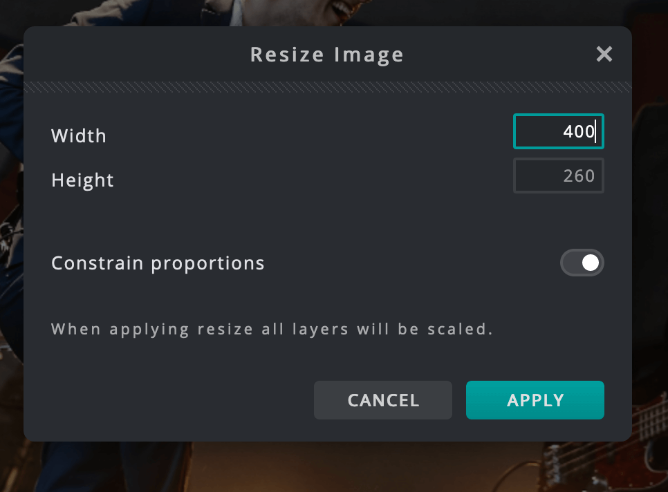
Fig 9
In the Resize Image dialog box and change the width to 400(px).
Ensure the Constrain proportions is selected as shown. This ensures your image gets the correct height to maintain the correct proportions - avoiding distorted images.Select Apply.
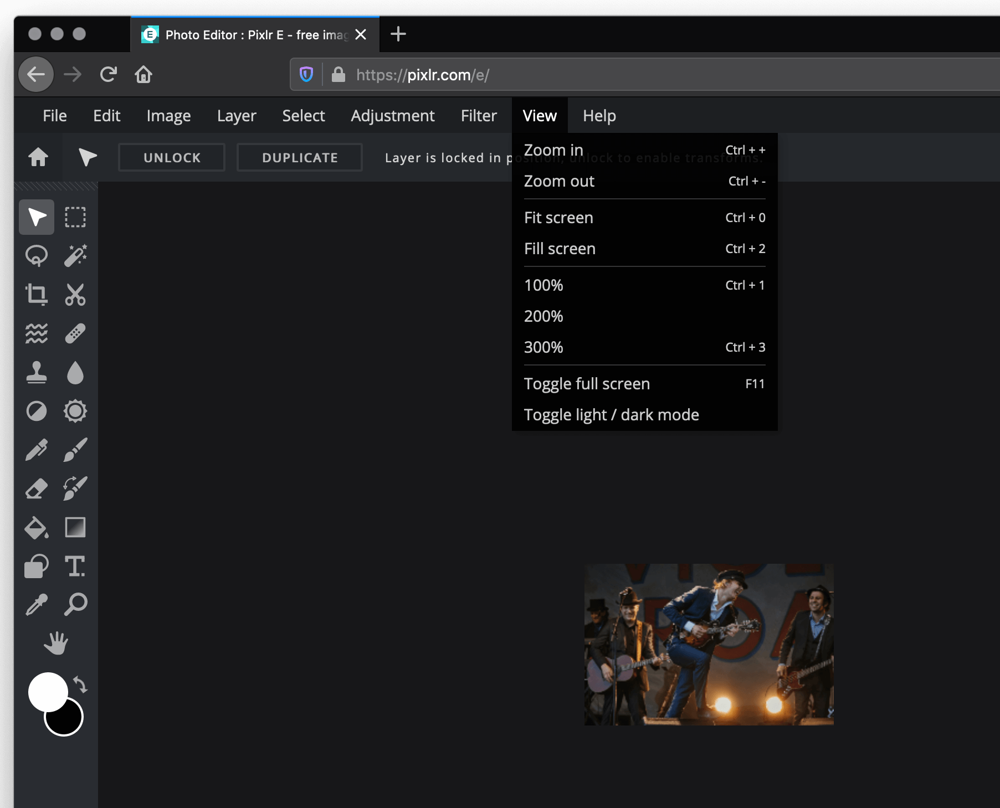
Fig 10We are now presented with a fairly small version of the image. To see it at the correct size Select View > 100%.
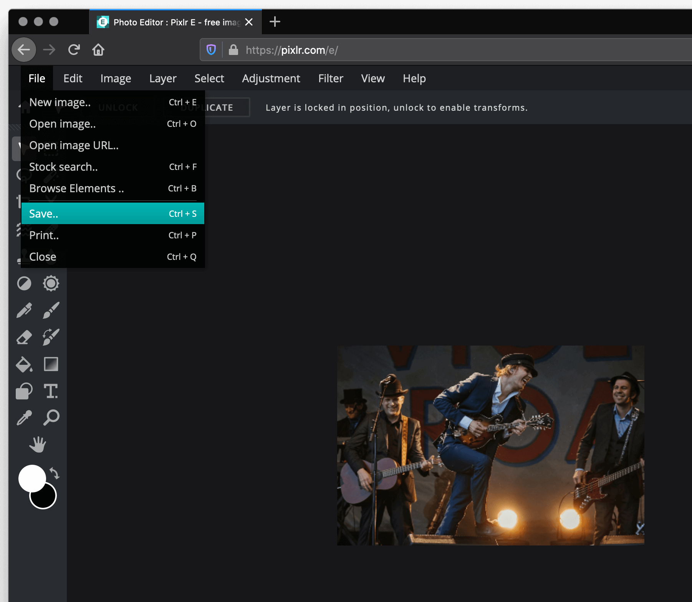
Fig 11To save the new version of our image Select File > Save.
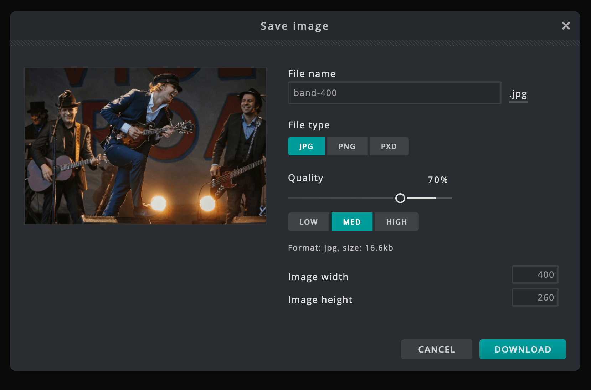
Fig 12
Enter the file band-400 to ensure we don't over-write the original on our computer.
Select File Type JPG - usually best for photos.
Select Quality Med - notice how the file size reduces.
Select Download to save the file to the folder called optimised.
The optimised version is cropped, reduced in quality (but still good enough for the web), and with a file size considerably smaller than the original.Back to exercise list